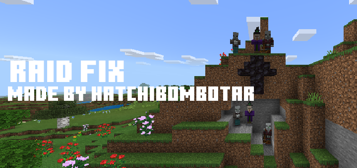
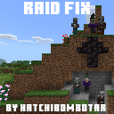
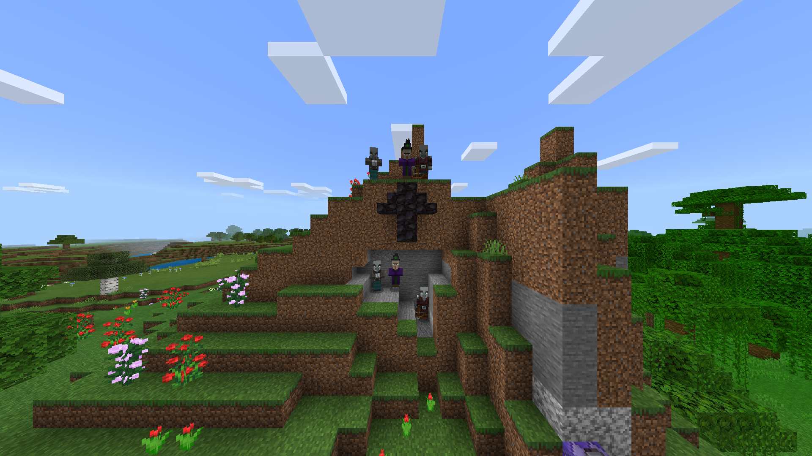

This addon was made to fix an annoying inconvinience. This pack can cause lag on slow devices or if lots or raids are happening at the same time.

Raid Fix
Small tweak
This Addon fixes the annoying bug where illager raids spawn in caves or somewhere under the ground.

The addon teleports illagers to the highest possible block.

This does not require experimental. This should work with 99% of other addons.